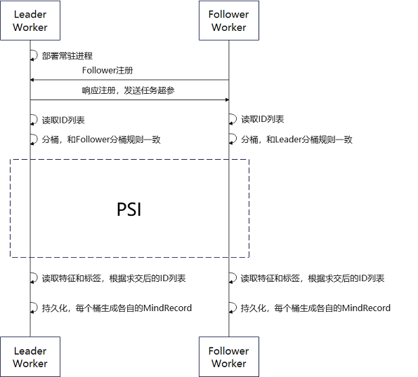

纵向联邦学习数据接入

和横向联邦学习不同，纵向联邦学习训练或推理时，两个参与方（leader和follower）拥有相同样本空间。因此，在纵向联邦学习的双方发起训练或推理之前，必须协同完成数据求交。双方必须读取各自的原始数据，并提取出每条数据对应的ID（每条数据的唯一标识符，且都不相同）进行求交（即求取交集）。然后，双方根据求交后的ID从原始数据中获得特征或标签等数据。最后各自导出持久化文件，并在后续训练或推理之前保序地读取数据。
总体流程
数据接入可以分为数据导出和数据读取两个部分。
数据导出
MindSpore Federated纵向联邦学习数据导出流程框架如图1所示：

图 1 纵向联邦学习数据接入流程框架图
在数据导出流程中，Leader Worker和 Follower Worker为纵向联邦学习的两个参与方。Leader Worker常驻并保持对Follower Worker的监听，Follower Worker可以在任意时刻进入数据接入流程中。
在Leader Worker收到 Follower Worker的注册请求后，会对注册内容进行校验。若注册成功，则给Follower Worker发送任务相关的超参（PSI 相关超参、分桶规则、ID字段名称等）。
然后Leader Worker 和 Follower Worker 分别读取各自的原始数据，再从各自的原始数据中提取出 ID 列表并实现分桶。
Leader Worker 和 Follower Worker 的每个桶都启动隐私求交方法获得两方的ID交集。
最后，两方根据ID交集提取原始数据中相应的数据并导出成MindRecord格式的文件。
数据读取
纵向联邦要求两个参与方在训练或推理的每一个批次的数据ID的值和顺序都一样的。MindSpore Federated通过在两方读取各自数据时，使用相同的随机种子和对导出的文件集合使用字典排序的方法，保证数据读取的顺序一致。
快速体验
数据准备样例
若要使用数据接入方法，首先需要准备好原始数据。用户可以使用随机数据生成脚本生成出各参与方的伪造数据作为样例。
python generate_random_data.py \
--seed=0 \
--total_output_path=vfl/input/total_data.csv \
--intersection_output_path=vfl/input/intersection_data.csv \
--leader_output_path=vfl/input/leader_data_*.csv \
--follower_output_path=vfl/input/follower_data_*.csv \
--leader_file_num=4 \
--follower_file_num=2 \
--leader_data_num=300 \
--follower_data_num=200 \
--overlap_num=100 \
--id_len=20 \
--feature_num=30
用户可根据实际情况进行超参设置：
超参名称 |
超参描述 |
|---|---|
seed |
随机种子，int类型。 |
total_output_path |
所有数据的输出路径，str类型。 |
intersection_output_path |
交集数据的输出路径，str类型。 |
leader_output_path |
leader方数据的输出路径。若配置的内容包括 |
follower_output_path |
follower方数据的输出路径。若配置的内容包括 |
leader_file_num |
leader方数据的输出文件数目，int类型。 |
follower_file_num |
follower方数据的输出文件数目，int类型。 |
leader_data_num |
leader方数据总量，int类型。 |
follower_data_num |
follower方数据总量，int类型。 |
overlap_num |
两方重叠的数据总量，int类型。 |
id_len |
数据ID为字符串类型。该超参为字符串的长度，int类型。 |
feature_num |
导出的数据的列数。 |
运行数据准备后生成多个csv文件：
follower_data_0.csv
follower_data_1.csv
intersection_data.csv
leader_data_0.csv
leader_data_1.csv
leader_data_2.csv
leader_data_3.csv
数据导出样例
用户可以使用数据求交脚本实现两方数据求交并导出成MindRecord格式文件。用户需要分别启动Leader和Follower两个进程。
启动Leader：
python run_data_join.py \
--role="leader" \
--main_table_files="vfl/input/leader/" \
--output_dir="vfl/output/leader/" \
--data_schema_path="vfl/leader_schema.yaml" \
--server_name=leader_node \
--http_server_address="127.0.0.1:1086" \
--remote_server_name=follower_node \
--remote_server_address="127.0.0.1:1087" \
--primary_key="oaid" \
--bucket_num=5 \
--store_type="csv" \
--shard_num=1 \
--join_type="psi" \
--thread_num=0
启动Follower：
python run_data_join.py \
--role="follower" \
--main_table_files="vfl/input/follower/" \
--output_dir="vfl/output/follower/" \
--data_schema_path="vfl/follower_schema.yaml" \
--server_name=follower_node \
--http_server_address="127.0.0.1:1087" \
--remote_server_name=leader_node \
--remote_server_address="127.0.0.1:1086" \
--store_type="csv" \
--thread_num=0
用户可根据实际情况进行超参设置：
超参名称 |
超参描述 |
|---|---|
role |
worker的角色类型，str类型，包括：”leader”、”follower”。 |
main_table_files |
原始数据路径，可以配置单个或多个文件路径、数据目录路径，list或str类型。 |
output_dir |
导出的MindRecord相关文件的目录路径，str类型。 |
data_schema_path |
导出时所需要配置的超参文件存放的路径，str类型。 |
server_name |
本地用于通信的http服务名字，str类型。 |
http_server_address |
本机IP和端口地址，str类型。 |
remote_server_name |
对端用于通信的http服务名字，str类型。 |
remote_server_address |
对端IP和端口地址，str类型。 |
primary_key（Follower不需要配置） |
数据ID的名称，str类型。 |
bucket_num（Follower不需要配置） |
求交和导出时，分桶的数目，int类型。 |
store_type |
原始数据存储类型，str类型。包括：”csv”。 |
shard_num（Follower不需要配置） |
单个桶导出的文件数量，int类型。 |
join_type（Follower不需要配置） |
求交算法，str类型。包括：”psi”。 |
thread_num |
使用PSI求交算法时，计算所需线程数，int类型。 |
在上述样例中，data_schema_path对应的文件可以参考leader_schema.yaml和follower_schema.yaml中的相应文件配置。用户需要在该文件中提供要导出的数据的列名和类型。
运行数据导出后生成多个MindRecord相关文件：
mindrecord_0
mindrecord_0.db
mindrecord_1
mindrecord_1.db
mindrecord_2
mindrecord_2.db
mindrecord_3
mindrecord_3.db
mindrecord_4
mindrecord_4.db
数据读取样例
用户可以使用读取数据脚本实现求交后的数据读取：
python load_joined_data.py \
--seed=0 \
--input_dir=vfl/output/leader/ \
--shuffle=True
用户可根据实际情况进行超参设置：
超参名称 |
超参描述 |
|---|---|
seed |
随机种子，int类型。 |
input_dir |
输入的MindRecord相关文件的目录，str类型。 |
shuffle |
数据是否需要打乱，bool类型。 |
如果求交结果正确，两方各自读取数据时，两方的每条数据的OAID顺序一致，而每条数据中的其他列的数据可以为不同值。运行数据读取后打印交集数据：
Leader数据导出运行结果：
{……, 'oaid': Tensor(shape=[], dtype=String, value= 'uMbgxIMMwWhMGrVMVtM7')}
{……, 'oaid': Tensor(shape=[], dtype=String, value= 'IwoGP08kWVtT4WHL2PLu')}
{……, 'oaid': Tensor(shape=[], dtype=String, value= 'MSRe6mURtxgyEgWzDn0b')}
{……, 'oaid': Tensor(shape=[], dtype=String, value= 'y7X0WcMKnTLrhxVcWfGF')}
{……, 'oaid': Tensor(shape=[], dtype=String, value= 'DicKRIVvbOYSiv63TvcL')}
{……, 'oaid': Tensor(shape=[], dtype=String, value= 'TCHgtynOhH3z11QYemsH')}
{……, 'oaid': Tensor(shape=[], dtype=String, value= 'OWmhgIfC3k8UTteGUhni')}
{……, 'oaid': Tensor(shape=[], dtype=String, value= 'NTV3qEYXBHqKBWyHGc7s')}
{……, 'oaid': Tensor(shape=[], dtype=String, value= 'wuinSeN1bzYgXy4XmSlR')}
{……, 'oaid': Tensor(shape=[], dtype=String, value= 'SSsCU0Pb46XGzUIa3Erg')}
……
Follower数据导出运行结果：
{……, 'oaid': Tensor(shape=[], dtype=String, value= 'uMbgxIMMwWhMGrVMVtM7')}
{……, 'oaid': Tensor(shape=[], dtype=String, value= 'IwoGP08kWVtT4WHL2PLu')}
{……, 'oaid': Tensor(shape=[], dtype=String, value= 'MSRe6mURtxgyEgWzDn0b')}
{……, 'oaid': Tensor(shape=[], dtype=String, value= 'y7X0WcMKnTLrhxVcWfGF')}
{……, 'oaid': Tensor(shape=[], dtype=String, value= 'DicKRIVvbOYSiv63TvcL')}
{……, 'oaid': Tensor(shape=[], dtype=String, value= 'TCHgtynOhH3z11QYemsH')}
{……, 'oaid': Tensor(shape=[], dtype=String, value= 'OWmhgIfC3k8UTteGUhni')}
{……, 'oaid': Tensor(shape=[], dtype=String, value= 'NTV3qEYXBHqKBWyHGc7s')}
{……, 'oaid': Tensor(shape=[], dtype=String, value= 'wuinSeN1bzYgXy4XmSlR')}
{……, 'oaid': Tensor(shape=[], dtype=String, value= 'SSsCU0Pb46XGzUIa3Erg')}
……
深度体验
下列代码的详细的API文档可以参考数据接入文档。
数据导出
用户可以使用已经封装好的接口和配置文件实现数据求交以及导出MindRecord相关文件，方法如下：
from mindspore_federated import FLDataWorker
from mindspore_federated.common.config import get_config
if __name__ == '__main__':
current_dir = os.path.dirname(os.path.abspath(__file__))
args = get_config(os.path.join(current_dir, "vfl/vfl_data_join_config.yaml"))
dict_cfg = args.__dict__
worker = FLDataWorker(config=dict_cfg)
worker.do_worker()
数据读取
用户可以使用已经封装好的接口实现导出的MindRecord相关文件的数据读取，方法如下：
from mindspore_federated.data_join import load_mindrecord
if __name__ == "__main__":
dataset = load_mindrecord(input_dir="vfl/output/leader/", shuffle=True, seed=0)